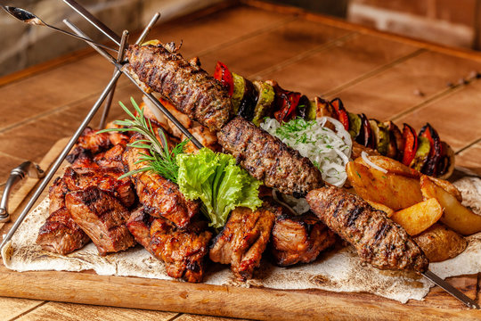

Kabuli Pulao

ingrediants
- 200g rice
- 1 cup of water
- chopped onion 30g
instructions
- Boil the rice 20 Munite
- Add 1 cup of salt
- Add one spon suger in each cup of rice
- then add meat and mix them
Kebab

ingrediants
- 30g meat
- half cup of hot water and suger
- chopped onion 30g
instructions
- Boil the meat for 30 Munite
- Add 2 cup of salt
- then add potatoes and tomatoes
Mantue

ingrediants
- 10g meat
- hot water just a cup
- onion 30g
instructions
- the meat should be boild for 10 Munite
- cup of salt just one
- then add ....
Its time to taste the Kabuli pulao